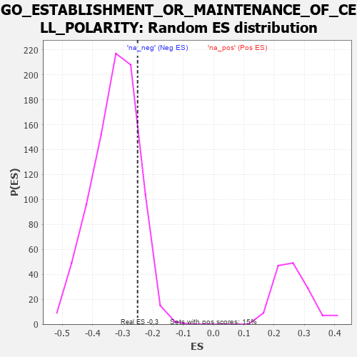

| | | Dataset | 7d |
| Phenotype | NoPhenotypeAvailable |
| Upregulated in class | na_neg |
| GeneSet | GO_ESTABLISHMENT_OR_MAINTENANCE_OF_CELL_POLARITY |
| Enrichment Score (ES) | -0.25121593 |
| Normalized Enrichment Score (NES) | -0.7698079 |
| Nominal p-value | 0.8544601 |
| FDR q-value | 0.99532354 |
| FWER p-Value | 1.0 |
Table: GSEA Results Summary
 Fig 1: Enrichment plot: GO_ESTABLISHMENT_OR_MAINTENANCE_OF_CELL_POLARITY
Fig 1: Enrichment plot: GO_ESTABLISHMENT_OR_MAINTENANCE_OF_CELL_POLARITY
Profile of the Running ES Score & Positions of GeneSet Members on the Rank Ordered List
| PROBE | GENE SYMBOL | GENE_TITLE | RANK IN GENE LIST | RANK METRIC SCORE | RUNNING ES | CORE ENRICHMENT | | 1 | RAC2 | | | 60 | 2.442 | 0.0820 | No |
| 2 | FOXF1 | | | 176 | 1.136 | 0.1091 | No |
| 3 | RHOH | | | 228 | 0.987 | 0.1388 | No |
| 4 | FSCN1 | | | 297 | 0.830 | 0.1606 | No |
| 5 | NDC80 | | | 616 | 0.590 | 0.1421 | No |
| 6 | HES5 | | | 661 | 0.571 | 0.1574 | No |
| 7 | DOCK7 | | | 1398 | 0.410 | 0.0794 | No |
| 8 | ZW10 | | | 1973 | 0.309 | 0.0182 | No |
| 9 | BRSK2 | | | 1979 | 0.308 | 0.0288 | No |
| 10 | LRRC7 | | | 2080 | 0.294 | 0.0269 | No |
| 11 | DOCK8 | | | 2341 | 0.254 | 0.0034 | No |
| 12 | BCAS3 | | | 2352 | 0.253 | 0.0114 | No |
| 13 | MPP5 | | | 2362 | 0.251 | 0.0195 | No |
| 14 | MPP7 | | | 2606 | 0.211 | -0.0035 | No |
| 15 | RAB10 | | | 2952 | 0.157 | -0.0414 | No |
| 16 | FEZ1 | | | 3055 | 0.142 | -0.0491 | No |
| 17 | MAP2 | | | 3074 | 0.140 | -0.0462 | No |
| 18 | SFRP5 | | | 3154 | 0.129 | -0.0515 | No |
| 19 | PAX6 | | | 3170 | 0.127 | -0.0487 | No |
| 20 | PARD3 | | | 3584 | 0.063 | -0.0987 | No |
| 21 | STK25 | | | 3602 | 0.059 | -0.0986 | No |
| 22 | MCPH1 | | | 4039 | -0.014 | -0.1532 | No |
| 23 | TCF15 | | | 4077 | -0.020 | -0.1572 | No |
| 24 | CRK | | | 4139 | -0.031 | -0.1638 | No |
| 25 | GBF1 | | | 4215 | -0.044 | -0.1716 | No |
| 26 | WNT11 | | | 4282 | -0.056 | -0.1779 | No |
| 27 | LIN7B | | | 4370 | -0.071 | -0.1863 | No |
| 28 | ARF4 | | | 4383 | -0.073 | -0.1851 | No |
| 29 | ILK | | | 4510 | -0.096 | -0.1976 | No |
| 30 | SNX27 | | | 4585 | -0.115 | -0.2027 | No |
| 31 | GATA3 | | | 4614 | -0.120 | -0.2018 | No |
| 32 | DLG5 | | | 4619 | -0.121 | -0.1979 | No |
| 33 | PTK7 | | | 4687 | -0.136 | -0.2013 | No |
| 34 | ARF6 | | | 4704 | -0.140 | -0.1983 | No |
| 35 | RAP1B | | | 4706 | -0.140 | -0.1932 | No |
| 36 | LHX2 | | | 4716 | -0.143 | -0.1891 | No |
| 37 | WDR1 | | | 4824 | -0.163 | -0.1967 | No |
| 38 | DLG1 | | | 4860 | -0.169 | -0.1949 | No |
| 39 | MARK2 | | | 4899 | -0.177 | -0.1932 | No |
| 40 | CAP2 | | | 4943 | -0.186 | -0.1918 | No |
| 41 | PARVA | | | 5187 | -0.245 | -0.2136 | No |
| 42 | GPSM2 | | | 5228 | -0.252 | -0.2094 | No |
| 43 | KRIT1 | | | 5248 | -0.257 | -0.2024 | No |
| 44 | FAT1 | | | 5281 | -0.267 | -0.1967 | No |
| 45 | NDE1 | | | 5578 | -0.339 | -0.2217 | No |
| 46 | MTCL1 | | | 5697 | -0.374 | -0.2229 | No |
| 47 | STK11 | | | 5922 | -0.443 | -0.2350 | Yes |
| 48 | CAP1 | | | 5935 | -0.447 | -0.2201 | Yes |
| 49 | DCTN1 | | | 5950 | -0.454 | -0.2052 | Yes |
| 50 | CKAP5 | | | 6032 | -0.482 | -0.1978 | Yes |
| 51 | RAC1 | | | 6036 | -0.484 | -0.1804 | Yes |
| 52 | PLK1 | | | 6082 | -0.500 | -0.1678 | Yes |
| 53 | FLOT2 | | | 6092 | -0.504 | -0.1504 | Yes |
| 54 | DLG2 | | | 6126 | -0.513 | -0.1358 | Yes |
| 55 | ROCK1 | | | 6152 | -0.520 | -0.1199 | Yes |
| 56 | PARVB | | | 6168 | -0.528 | -0.1025 | Yes |
| 57 | CDC42 | | | 6236 | -0.548 | -0.0908 | Yes |
| 58 | LAMA1 | | | 6496 | -0.659 | -0.0994 | Yes |
| 59 | KANK1 | | | 6536 | -0.678 | -0.0795 | Yes |
| 60 | RNF41 | | | 6588 | -0.703 | -0.0601 | Yes |
| 61 | PAK1 | | | 6691 | -0.757 | -0.0453 | Yes |
| 62 | GSK3B | | | 6719 | -0.768 | -0.0205 | Yes |
| 63 | FBF1 | | | 7241 | -1.111 | -0.0457 | Yes |
| 64 | PKD1 | | | 7628 | -1.611 | -0.0354 | Yes |
| 65 | ANK1 | | | 7815 | -2.146 | 0.0197 | Yes |
Table: GSEA details [plain text format]

Fig 2: GO_ESTABLISHMENT_OR_MAINTENANCE_OF_CELL_POLARITY: Random ES distribution
Gene set null distribution of ES for GO_ESTABLISHMENT_OR_MAINTENANCE_OF_CELL_POLARITY